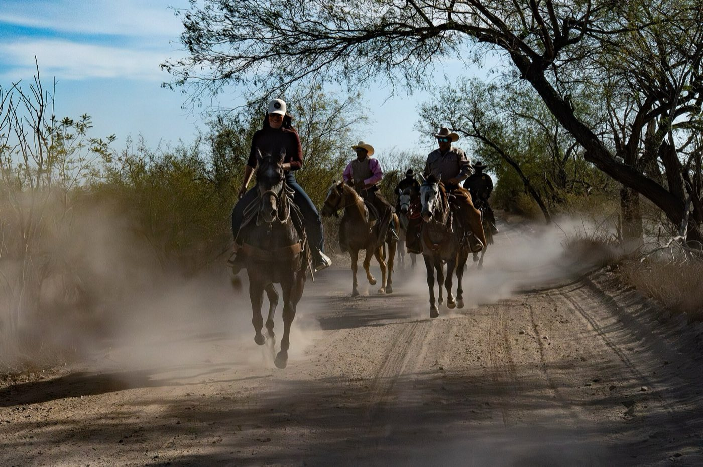

What the place serves up
- The PTO doesn’t give it back. By the time the shaft stops turning, the damage is done and the bleeding is the emergency. Tourniquet-first is the doctrine for a limb like that — learn it before the day you need it one-handed.
- Second cutting, 102 in the shade. Halfway through the load your hired kid staggers and can’t answer a straight question. That’s heat stroke, not soft — cool him right there with the stock tank and the hose, and let the truck wait.
- The neighbor says it’s his shoulder. He’s gray, sweating through his shirt, and bound on fixing the baler. Crushing chest pain plus denial is the classic presentation — sit him down, aspirin if nothing rules it out, and make the call he won’t.
Five lessons between chores
Ordered by what actually comes through the gate:
- Bleeding, Wounds & Burns — augers, PTOs, and balers — the tourniquet is farm equipment now
- Heat Illness — haying-season physiology: the spectrum, and cool-first when it tips over
- Medical Emergencies — chest pain, denial, and aspirin, for a demographic that won’t sit down
- Shock — the trend that says whether the kick was nothing or a countdown
- Evacuation — meeting the ambulance: gate names, section lines, and somebody standing at the road
Then pressure-test it
Interactive scenarios — one decision at a time, tempting mistakes included, debrief at the end:
- It’s Not Indigestion — the stoic neighbor, the chest pain, the call
- Cool First — heat stroke in the field, cooled where he dropped
- The Guy Who’s Fine — kicked, laughing, and quietly bleeding inside
The certification question, honestly. “Wilderness First Aid” isn’t a regulated credential. No government body defines what a WFA card means — it means whatever the company that printed it says it means. What counts in front of a patient is whether you can do the work. This course teaches the work, free, and issues a record of completion — not a certificate, and we won’t pretend otherwise. If you employ a crew, an OSHA-recognized first aid card may be a requirement — take that class from a listed provider and walk in already fluent. Farm bureau and extension safety days are worth a morning; this pairs with them, it doesn’t replace them. If nobody requires you to hold a card, what you need are the skills, not the laminate.
What this is
Fifteen lessons, a 40-question knowledge check, sixteen practice scenarios, a printable field reference card, and a kit checklist. Free, no account, nothing recorded about you, source on GitHub. It teaches decision-making, not hands-on skill — practice the hands-on parts on a real, padded, complaining friend.
Other far-from-town neighbors: big game hunters & backcountry bowhunters · horsepackers & equestrian trail riders · foragers, herbalists & mushroom hunters